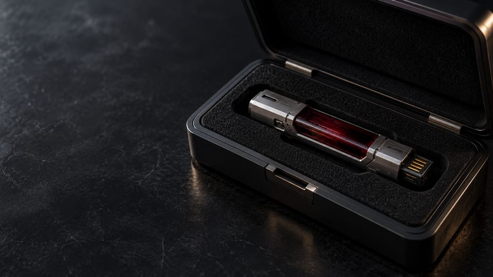
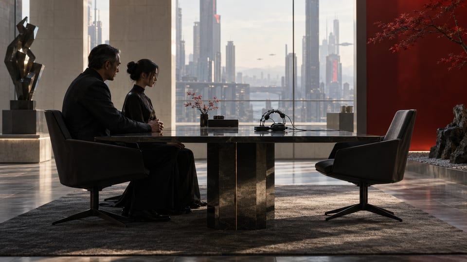

Neural biochip
Relic
Arasaka's biochip platform for stored personality constructs and neural interaction.



Tokyo / Global operations
Security. Capital. Continuity.
Japanese industry. Global protection. Technologies that carry a lifetime forward.
Products & technology
Relic carries a personality. Mikoshi retains the archive. Shingen and Yukimura extend our smart weapon portfolio.
Neural biochip
Arasaka's biochip platform for stored personality constructs and neural interaction.

Engram infrastructure
Protected infrastructure for the storage and management of digital personality constructs.

Smart submachine gun
The TKI-20 Shingen brings smart targeting to a compact submachine-gun platform.

Our businesses
Security protects the foundation. Capital enables expansion. Technology extends the horizon.

01 / SEC / DEF
Arasaka brings protective services, defense manufacturing, and field operations together. From a single executive detail to an international industrial network, protection is designed around the whole assignment.
Explore the business
02 / BANK / CAP
Arasaka's financial businesses connect corporate finance, private banking, and strategic asset custody. Capital and protection are coordinated across the group, supporting enterprises with interests beyond a single market.
Explore the business03 / TECH / R&D
From the Relic biochip to Mikoshi's archive infrastructure, Arasaka develops the technologies that connect human experience with digital systems. Research, precision manufacturing, and secure facilities form a single development chain.
Explore the businessEngram technology
01 / Representation
The technology associated with producing a digital personality construct.
02 / Archive
The protected infrastructure in which engrams are stored and managed.
03 / Interface
The biochip that carries a construct and provides a neural connection.

TOKYO / ARASAKA
With Saburo Arasaka's leadership restored, the group enters its next era with renewed focus on security, industrial strength, and the continuity of human experience.
About Arasaka
Relic / Human continuity
A familiar expression. A memory only your family shares. Relic brings a stored personality into conversation. Behind that encounter lies another institution: the archive that holds the construct, the people authorized to request access, and the instructions that govern what happens next.
Relic